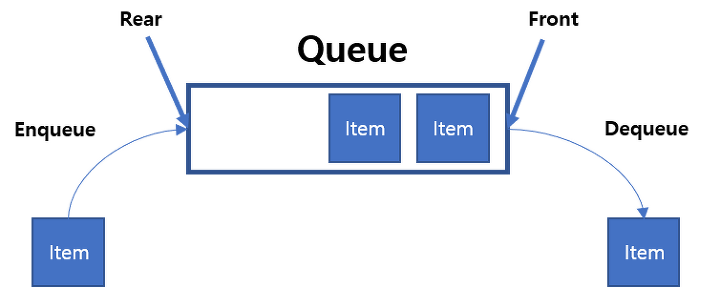

큐는 스택과 매우 유사하지만 몇 가지 차이점이 존재한다.
1. 한쪽에서 모든 입출력이 이루어지던 스택과 달리, 한쪽에서는 출력만, 다른쪽에서는 입력만이 이루어진다.
2. 따라서 처음 들어간 데이터가 가장 처음 나오는 선입선출(FIFO)의 구조를 갖는다.

그림에서처럼 넣는 곳을 rear, 빼는 곳을 front라고 지칭한다.
큐의 연산에는,
.enQueue(): rear에 데이터를 삽입한다.
.peek(): front에 있는 데이터를 반환한다.
.deQueue(): front에 있는 데이터를 삭제한다.
.empty(): 큐가 비었다면 1을 반환하고,그렇지 않다면 0을 반환한다.